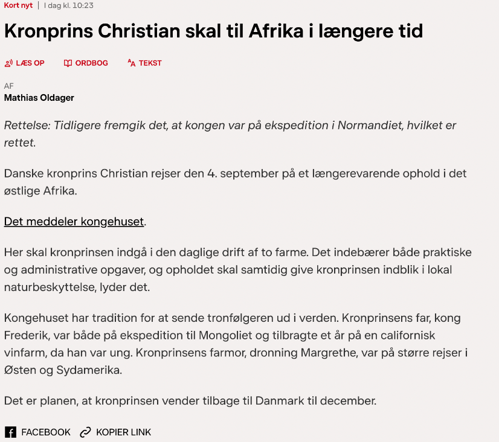
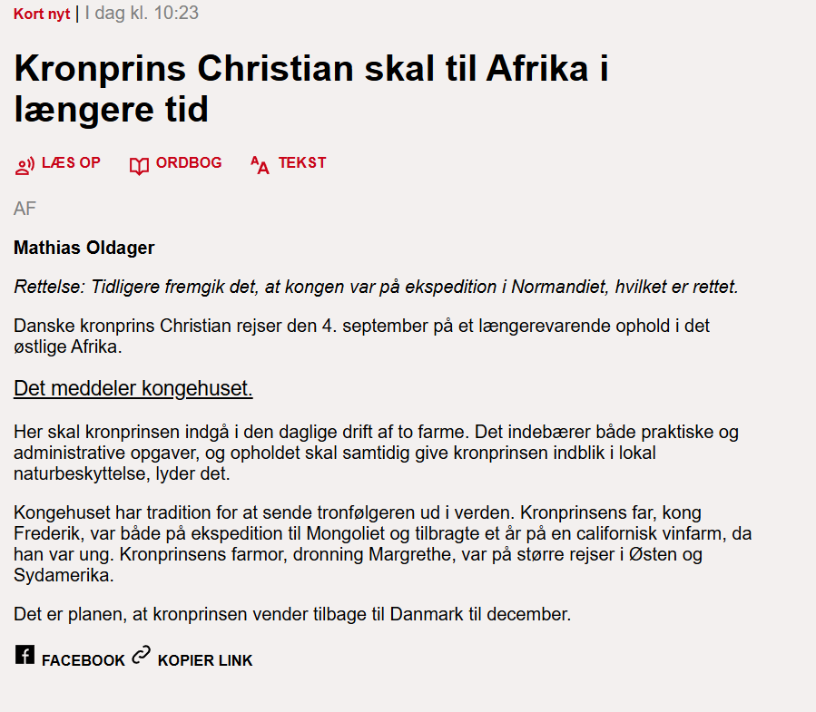
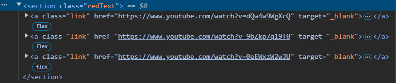
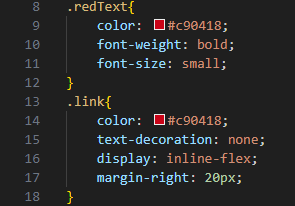
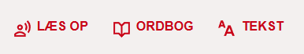

Artiklen fra DR ser således ud:
Denne opgave gik ud på, at kode en artikel fra DR.
Og dette er min rekreation af artiklen:
Til denne opgave var der en del vanskeligheder.
Først og fremmest var det generelle layout og tekst forholdsvis nem at lave. Det, der skabte en del problemer, var de forskellige ikoner og links inden og før artiklen som "læs op" og "ordbog". De er nemlig SVG filer som skal stå sammen med teksten, hvilket ikke var noget jeg havde prøvet før.
Jeg startede med at putte det hele under en section.

Her har "section" og hvert "a" element en class som er stylet således:
Her er den relevante del "display" elementet som er sat til "inline-flex", hvilket får teksten, linksne og billederne til at være side om side.
